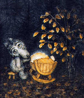
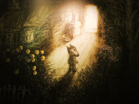
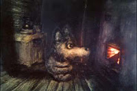

4 Моя сказка
Вечером, когда шла от станции через лес и видела старые деревянные домики с резными окнами, ощутила такую сильную связь с землёй, что у меня текли слезы по щекам, но я была бесконечно счастлива. Я смотрела на окна деревяных домов, завешанные тюлем и передо мной проскакивала череда воспоминаний, которых у меня не могло быть. Словно я сама прожила в этом доме целую жизнь, а теперь состарилась смотрела на саму себя из окошка. Я видела тысячу мгновений из моего детства, которых не было, я видела старость, смерть и возращение к жизни. Сны текли перед глазами сказочной вереницей, я плакала от счастья.
Словно я оказалась в храме памяти Земли. Я долго искала мою традицию, пыталась узнать её название, а вчера словно услышала - у традиции нет названия, поскольку никто её никак не называет, её проживают. Её язык - шелест листьев, её тайны, скрытые под семью печатями, - вот они, перед тобой, если умеешь Видеть. Учись у деревьев - у них длинная память, вдыхай аромат луговых трав и черпай из него силу. Этого древнего знания нет в книгах. Ты сама - книга, в которой оно написано, лишь прочти. Знание придёт с собственным опытом.
Можешь называть это как хочешь - шаманизм, магия, но истинное название этому написано не на человеческом языке - его хранит Земля . Я вспомнила давно забытые моменты из собственного детства, поскольку моё восприятие сместилось в ту область, где оно пребывало в те далекие дни. Я была искренне удивлена - в детстве так часто возникало восприятие сродни тому, что сейчас называют мистическим переживанием и вспомнить я смогла лишь тогда, когда вновь вернулась в это состояние сознания, правда, приложив усилия. Именно в этом состоянии мне было доступно пережить ощущение глубочайшей связи с землёй, в том чистом незамутненном состоянии. Я ощутила, что мне самой не хватает такого деревянного домика, хранящего словно шкатулка память лет. Избушки на курьих ножках. Как говорилось в сказке Филатова: " я - фольклорный элемент, у меня есть документ, я вообще могу отсюда улететь в любой момент. "
Баю-баю-баю, Не ложися на краю, Придёт серенький волчок, И ухватит за бочок, И утащит во лесок, Под ракитовый кусток...